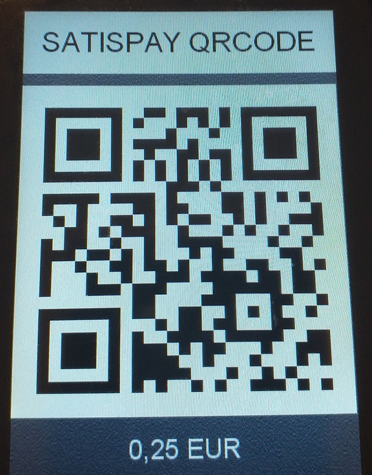
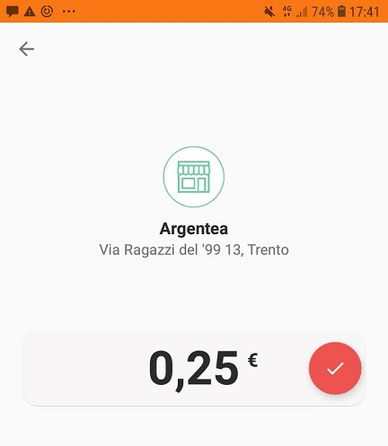
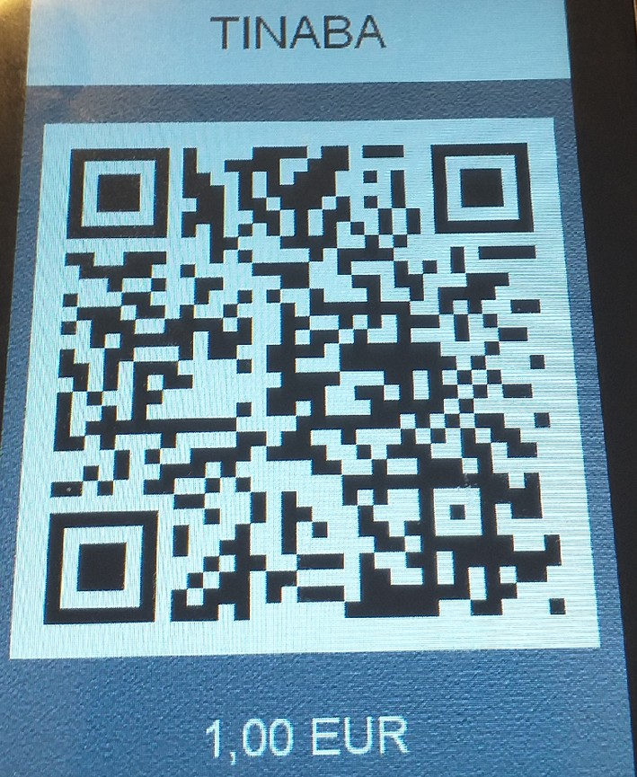
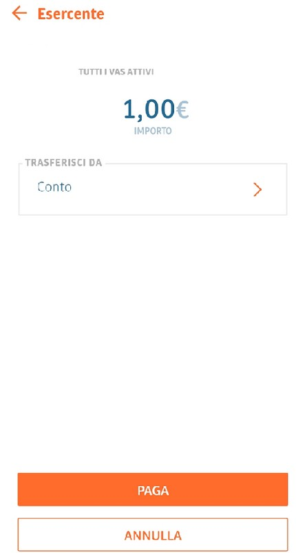
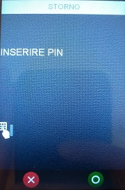

MANUALE DI UTILIZZO
SATISPAY
Stato
Utilizzato da
Redatto da RCC
Approvato da D.
Area Monetica
VERSIONING
DATA
REVISIONE
MODIFICHE APPORTATE
11/09/20
1.0
PRIMA STESURA
Indice generale
- Pagamenti Advanced (ADV) - SATISPAY....................................................................................................4
- Menù Pagamenti ADV...................................................................................................................................4
- Pagamento..................................................................................................................................................4
- Storno.........................................................................................................................................................7
- Ristampa....................................................................................................................................................8
- Retry Esito.................................................................................................................................................8
- Inizializzazione..........................................................................................................................................8
- Reset...........................................................................................................................................................8
- Info Pagamenti...........................................................................................................................................9
Pagamenti Advanced (ADV) - SATISPAY
La funzionalità di pagamenti advanced è disponibile solo per i POS Tetra con a bordo la release
AmoneyBpe 2.6 o maggiore.
I pagamenti ADV possono essere utilizzati solamente in Standalone.
Menù Pagamenti ADV
Premendo il tasto grigio, selezionando la voce AMONEY BPE e selezionando la voce “Pagamenti
ADV” è possibile accedere alle seguenti funzionalità:
- Pagamento
- Storno
- Ristampa
- Retry Esito
- Inizializzazione
- Reset
- Info Pagamenti
1. Pagamento
Selezionando “Pagamento” (tasto veloce 0) verranno mostrati i servizi di pagamento abilitati
per quella cassa:
- Satispay QRCODE;
- Tinaba.
1.1 Satispay QRCODE;
Dopo aver selezionato Satispay verrà richiesto di inserire l’importo del pagamento e di
confermarlo con tasto Verde.
A video verrà mostrato un Qrcode,

per effettuare la transazione l’utente, utilizzando l’app Satispay, dovrà scansionarlo tramite
cellulare e successivamente confermare l’importo.

Una volta completata l’operazione verrà stampato lo scontrino.
1.2 Tinaba
Dopo aver selezionato Tinaba verrà richiesto di inserire l’importo del pagamento e di
confermarlo con tasto Verde.
Il POS mostrerà a video un Qrcode

per effettuare la transazione l’utente, utilizzando l’app Tinaba, dovrà scansionarlo tramite
cellulare e successivamente confermare l’importo.

Una volta completata l’operazione verrà stampato lo scontrino.
2. Storno
Lo storno è possibile solo per l’ultima operazione autorizzata
Selezionando “Storno”, viene richiesto all’utente di inserire il seguente PIN 72617.

Una volta inserita la password premere tasto verde per confermare.
In caso di password errata o annullata, il POS torna al menù di Pagamento ADV.
Dopo l’inserimento della password corretta, viene richiesta conferma di voler procedere allo
storno, mostrerà l’importo dell’ultima transazione autorizzata.

È possibile quindi confermare con tasto verde.
Il POS procede all’invio della richiesta di storno.
Viene quindi visualizzato l’esito della richiesta e stampato lo scontrino.
3. Ristampa
Selezionando sulla cassa la relativa voce, la cassa procede alla ristampa dell’ultimo scontrino,
anche nel caso di un messaggio di errore.
4. Retry Esito
Nel caso l’operazione di pagamento risultasse interrotta (errore di tmo, mancata connessione,
POS si spegne), selezionando Retry Esito è possibile richiedere nuovamente l’invio dell’esito.
5. Inizializzazione
Una volta configurato il POS, è necessario inizializzarlo ai PagamentiAdv. Vedere paragrafo 4.1 e
4.2.
6. Reset
È possibile resettare il POS, cancellando la lista di transazioni effettuate fino a quel momento.
Selezionando “reset”, viene richiesto all’utente di inserire il seguente PIN 72618.
Dopo l’inserimento della password corretta, viene richiesta conferma all’utente dell’operazioni di
reset
Una volta eseguito il reset, sarà necessario eseguire un’inizializzazione per riattivare i pagamenti
ADV.
7. Info Pagamenti
Permette di visualizzare il tipo di PagamentiAdv abilitati.